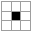

定义如下的分形：
$0$ 级的 o 是一个 $1 \times 1$ 的字符矩阵，里面包含了一个字符 o。
$0$ 级的 x 是一个 $1 \times 1$ 的字符矩阵，里面包含了一个字符 x。
$i$ 级的 x 和 o 均是 $3^i \times 3^i$ 的字符矩阵，它们分别由将 $i - 1$ 级别的 x 和 o 通过如下方式排列得到：
xox ooo oxo oxo xox ooo
举例来说，二级的 x 和 o 分别为：
xoxoooxox ooooooooo oxooxooxo oxooxooxo xoxoooxox ooooooooo oooxoxooo oooxoxooo oxooxooxo oxooxooxo oooxoxooo oooxoxooo xoxoooxox ooooooooo oxooxooxo oxooxooxo xoxoooxox ooooooooo
给定若干组询问，每组询问给定 $n$ 级 x 的子矩形，求在这个子矩形中 o 被分割成了多少个 $4-$连通块。
输入第一行包含一个正整数 $t$ ($1 \leq t \leq 50$)，表示数据组数。
对于每组数据，共一行，包含五个正整数 $n, xl, xr, yl, yr$ ($1 \leq n \leq 35; 1 \leq xl \leq xr \leq 3^n; 1 \leq yl \leq yr \leq 3^n$)。
对于每组数据，输出一行一个整数，表示 o 的 $4-$连通块个数。答案可能很大，你只需要输出对 $998244353$ 取模后的值。
为了方便起见，我们将 x 所在的格子称为黑格，o 所在的格子称为白格。
首先，不难发现一个重要的性质：(性质 1) 任意两个黑格都不相邻。
这个结论以及下述结论的证明都可利用分形的结构使用数学归纳法轻松解决，这里就不再赘述。
以及，(性质 2) 除了边界上大小为 $1$ 的白色连通块，其余所有的白色连通块均至少在一个完整的 "回字形" 连通块中。这里回字形指的是 。
于是，当我们统计完所有边界上大小为 $1$ 的白色连通块后，我们可以将 变成 ， 变成 而不影响答案。
那么在转化完后，整个矩形可以分成若干个 $3 \times 3$ 个块状区域，从而可以将原问题转化为一个规模为原问题 $\dfrac 13$ 的子问题。
现在考虑如何统计边界上大小为 $1$ 的白色连通块个数，当然，这里假设整个矩形至少是 $2 \times 2$。以最顶端一行为例，不妨设它是第 $x$ 行。
首先，如果 $x \equiv 1, 2 \pmod 3$，那么这样的连通块是不存在的，这个证明并不难。
现在考虑 $x \equiv 0 \pmod 3$ 的情况，不难发现，这样每一个大小为 $1$ 的连通块对应到第 $x + 1$ 行的一个 ，也就是说，我们需要统计一行中某个范围间的 个数。
由分形的定义，只需要统计一个规模为 $\dfrac 13$ 的子问题中，一行某个范围间的黑格数量。
于是，整个递归过程可以阐述如下：
如果 $xl = xr$ 或 (对称地) $yl = yr$，说明只有一行，而一行中白格的连通块个数由黑格的个数决定 (注意任意两个黑格不相邻)，因此我们只需要统计出一行某个范围间的黑格数量。
否则，说明矩形大小至少是 $2 \times 2$，我们通过上面的方法求出边界上大小为 $1$ 的白色连通块个数，由上文可知它最终也会转化为求一行某个范围间的黑格数量。
求完边界上的白色连通块数后，将 变成 ， 变成 ，然后递归进行 (回到第一步)。
那么，最终的任务就是如何快速求出一行某个范围间的黑格数量，换句话说，等价地，某个前缀的黑格数量。
为了方便讨论，我们考虑原始矩形为某个 o 的情况，因为 $n$ 级 x 毕竟也是 $n + 1$ 级 o 的一部分，不影响实质。
设我们现在在求第 $x$ 行 (最顶端是第 $0$ 行) 的前 $y$ 个格子中的黑格数量。
设 $x = \left( x_{r-1} x_{r-2} \cdots x_1 x_0 \right)_3, y = \left( y_{r-1} y_{r-2} \cdots y_1 y_0 \right)_3$。
(ps: 以下部分略去证明，可尝试自行证明)
若 $x_{r-1}, x_{r-2}, x_1, x_0$ 中没有 $1$，则第 $x$ 行是纯白。
否则，设 $x$ 的三进制中，最低位的 $1$ 出现在 $x_n$，则 $\left( x, y \right)$ 是黑色当且仅当 $y$ 也满足这个性质 (即 $y$ 的最低位的 $1$ 出现在 $y_n$)。
这样统计的时候，对于情形 1. 非常简单，对于情形 2. 我们可以先算出 $n$ 的值，然后只需要计算最低 $1$ 出现在第 $n$ 位的数的个数。
显然这行的颜色以 $3^{n+1}$ 为周期，因此考虑 $y < 3^{n+1}$ 的情形，此时所有白格集中在 $\left[ 3^n, 2 \cdot 3^n \right)$，因此只需要统计不超过某个数，且三进制表示中没有 $1$ 的数的数量即可。
数位 DP贪心计算即可，时间复杂度 $O \left( \log y \right)$。
于是我们解决了最终的问题，总时间复杂度的一个上界为 $O \left( n^2 \right)$ (当然可以做到 $O \left( n \right)$ 但没必要)。
#include <bits/stdc++.h>
using std::cin;
using std::cout;
typedef long long ll;
const int mod = 998244353;
const ll pw3[40] = {1ll, 3ll, 9ll, 27ll, 81ll, 243ll, 729ll, 2187ll, 6561ll, 19683ll, 59049ll, 177147ll, 531441ll, 1594323ll, 4782969ll, 14348907ll, 43046721ll, 129140163ll, 387420489ll, 1162261467ll, 3486784401ll, 10460353203ll, 31381059609ll, 94143178827ll, 282429536481ll, 847288609443ll, 2541865828329ll, 7625597484987ll, 22876792454961ll, 68630377364883ll, 205891132094649ll, 617673396283947ll, 1853020188851841ll, 5559060566555523ll, 16677181699666569ll, 50031545098999707ll, 150094635296999121ll, 450283905890997363ll, 1350851717672992089ll, 4052555153018976267ll};
inline int prefix(ll x, ll y) {
int i, n; ll B, C = 0;
for (n = 0; x && x % 3 != 1; x /= 3, ++n);
if (!x) return 0;
B = y / pw3[n + 1], y %= pw3[n + 1];
if (y <= pw3[n]) return (B % mod << n) % mod;
if (y >= 2 * pw3[n]) return ((B + 1) % mod << n) % mod;
for (i = n - 1; i >= 0; --i)
switch (y / pw3[i] % 3) {
case 0: C <<= 1; break;
case 1: C = (C << 1 | 1) << i; i = -1; break;
case 2: C = C << 1 | 1; break;
}
return (B % mod << n | C) % mod;
}
inline int line(ll x, ll y1, ll y2) {int $ = prefix(x, y2 + 1) - prefix(x, y1); return $ + ($ >> 31 & mod);}
int FCC(ll x1, ll x2, ll y1, ll y2) {
if (x1 == x2 && y1 == y2) return 1 - line(x1, y1, y1);
if (x1 == x2) return line(x1, y1 + 1, y2 - 1) + 1;
if (y1 == y2) return line(y1, x1 + 1, x2 - 1) + 1;
ll ret = FCC(x1 / 3, x2 / 3, y1 / 3, y2 / 3);
if (x1 % 3 == 0) ret += line(x1 / 3, (y1 + 1) / 3, (y2 - 1) / 3);
if (x2 % 3 == 2) ret += line(x2 / 3, (y1 + 1) / 3, (y2 - 1) / 3);
if (y1 % 3 == 0) ret += line(y1 / 3, (x1 + 1) / 3, (x2 - 1) / 3);
if (y2 % 3 == 2) ret += line(y2 / 3, (x1 + 1) / 3, (x2 - 1) / 3);
return ret % mod;
}
void work() {
int n; ll x1, x2, y1, y2;
cin >> n >> x1 >> x2 >> y1 >> y2,
cout << FCC(pw3[n] + --x1, pw3[n] + --x2, pw3[n] + --y1, pw3[n] + --y2) << '\n';
}
int main() {
int T;
std::ios::sync_with_stdio(false), cin.tie(NULL);
for (cin >> T; T; --T) work();
return 0;
}
坑1：在需要除以 $3$ 时，注意是上取整还是下取整，以及对余数的处理。计算三进制某一位时，可以预处理 $3$ 的幂次。
坑2：由于我们计算的是 o 中连通块的个数，因此递归前需要将它们先加上 $3^n$。